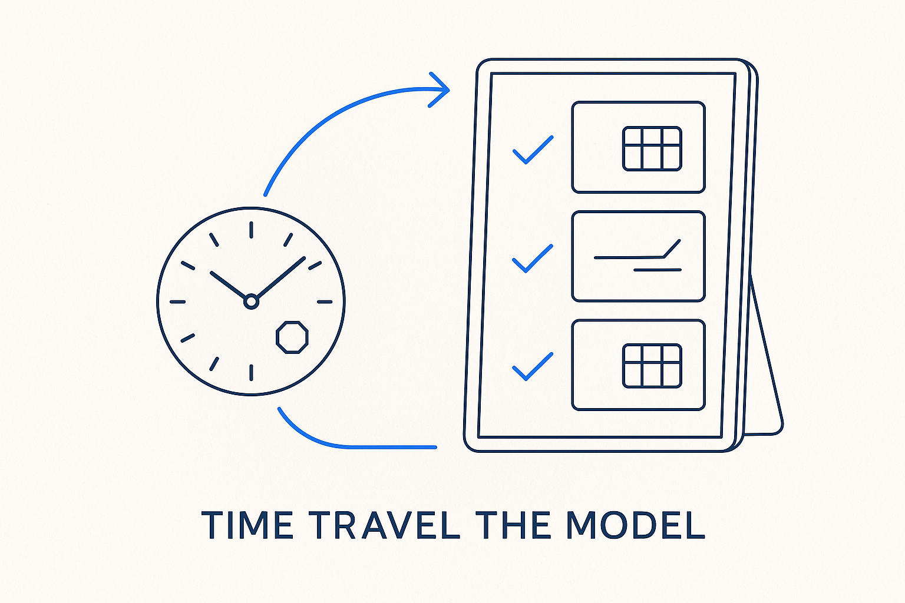

Load the git history of the metadata files into the mirror as versioned snapshots, so an app can scrub any object — a table, a rule — back to how it looked at any point in time. Git becomes the model-versioning clock.

> Load the git history of the metadata files into the mirror as versioned snapshots, so an app can scrub any object — a table, a rule — back to how it looked at any point in time. Git becomes the model-versioning clock.
The metadata mirror shows the current state: the files as they are now, read into a fast database. But the files live in git, and git already holds every earlier version of every one of them. Time-travel the model turns that latent history into a first-class dimension of the mirror. Instead of loading only the working tree, you walk the git log and load *each commit's* version of the metadata, tagging every row with the commit it came from and when it landed. The mirror stops being a snapshot and becomes a timeline.
That makes a new kind of question answerable in an app: not "what does this table look like" but "what did this table look like on the fifteenth of July, and what changed since." A version column and a point-in-time filter is all it takes — pick a moment, and the mirror returns the state as of that moment, one row per object. It's an SCD2 pattern, except the history isn't hand-maintained: it's reconstructed from git, which was recording it for free the whole time.
The symmetry is the point. Git is the version-control layer under the metadata files; model versioning is the concept of tracking how the model itself evolves. Here they become the same thing — git *is* the model-versioning clock, and the mirror reads its history the way it already reads the files' content. Structure once as files, version for free in git, and the model's whole evolution becomes queryable — you can watch a definition drift, catch when a rule was introduced, and trace, with lineage, the exact commit a change came from.
Where it lives: the metadata OS — git history loaded into the mirror as a version axis, so the model's past is queryable, not just its present.